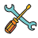

Christal O. Biney
Hi! I'm Christal, an honors mechanical engineering student pursuing a minor in energy and sustainability at the University of Houston.
I am passionate about exploring future fields in aerospace, plasma physics/fusion, biomedicine, and environmental science.
Please do not hesitate to reach me at cobiney cougarnet  edu or reach out through my Linkedin at
the bottom of the page!
edu or reach out through my Linkedin at
the bottom of the page!

Guided Parachute Recovery @ Undergraduate Student Instrumentation Program Jan 2023—Present
The Undergraduate Student Instrumentation Program allows students to conduct balloon-borne and ground-based geospace, Earth, and atmospheric science investigations in the auroral zone. As the flight actuator controls lead for the guided fall experiment I develop plans for the design, construction, and purchase of the actuators that provide sufficient force, speed, and travel distance for parachute control and balloon/suspension release mechanisms.
Design, Build, Fly @ UH American Institute of Aeronautics and Astronautics Sep 2023—Present
As a structures member of AIAA Design, Build, Fly, I have used parametric CAD in Autodesk Inventor to optimize the design of key aircraft components such as the wing spar. This has allowed for the creation of CAD structures with adjustable dimensions allowing for seamless updates to the wing spar design for evolving project requirements.
Space City Competitive Rocketry, Propulsion @ UH American Institute of Aeronautics and Astronautics  Oct 2022—Present
Oct 2022—Present
I support the Space City Rocketry propulsion team by leading efforts to manufacture custom parts through CNC of aluminum. I translate CAD designs into CNC-ready files using Autodesk Fusion to support the production of custom rocket propulsion components. Using the Autodesk Fusion manufacturing workspace, I create new setups, validate tool paths, and simulate the tool cutting of parts ensuring manufacturability for campus machinist. By preparing and simulating the machining of metal components, the team can explore the creation of custom chemical propellant, with inexpensive in-house manufactured parts.
Design Build Test: Object Collection Device @ MECE 2361 - Introduction to Mechanical Design  Aug 2024—Nov 2024
Objective: The goal of this project is to design, build, and test a single device that is less than 2.5 lbs that
fits within the packed (41.9cm x 33cm x 31.1cm) and unpacked (1 ft x 1 ft )
volume and area constraints. The device must collect a minimum of three objects from the ground area (zone zero) and
place them in different zones with different wall heights through up to three one-minute-long test runs,
if the device advances through each run without modifying the objects or contact out of the zones.
Key Contributions: I drafted the final report detailing the development, testing, and performance of the overall completed object
collection device in accordance with engineering technical writing guidelines. In addition, I assisted with proof-of-concept designs for the claw,
encoding a 180-servo motor attached to a fishing line to control a cardboard mechanical claw that could pick up ping-pong and golf balls.
Results: Our final device was able to successfully push two golf balls into the correct zone in test one, three in test two,
and collect three markers to place in the far back zone but could not place them in time for test three. Upon evaluation of our device's final
performance the collection mechanism proved to be strategic for collecting and storing multiple objects at once. Overall timing played a main factor
in the final testing. The design was functional but not in a way that optimized time as the track mobility system took time to reposition the device to collect objects
in a certain orientation. In the end, it proved to be a unique approach to the object collection problem.
Augmented Reality Sandbox @ UH American Society of Mechanical Engineers Oct 2024
Objective: Develop an interactive physical sandbox for real-time visualization using moldable sand, a depth sensor,
projector, and PC, with integrated features for topography mapping, water flow simulation, and interactive user controls.
Key Contributions: I assisted with woodworking and frame construction by drilling pilot holes to guide screws, preventing
the wood from cracking or splitting when assembling the bottom wood frame to the top piece. I operated a miter saw to cut precise wood pieces
for the projector mount and assembled the wheel and frame components using an impact drill to drive bolts, nuts, and screws securely. To seal
and prepare the sandbox structure’s surface, I applied caulk sealant to ensure the sandbox was watertight and suitable for moldable sand.
Results: While the Linux portion was not functional, we were ultimately able to create a physical sandbox to hold sand without leakage.
The sandbox is mobile, can securely hold a projector, and is mounted and angled properly so that the projection aligns perfectly with the dimensions of the sandbox.

Healthcare and Life Sciences: Mechanical Engineering and Quality Intern @ ABB May 2024—Aug 2024
During my ABB Robotics internship, I played a key role in advancing projects by creating precise deliverables in SolidWorks for a Lifesciences customer product.
These models were critical for Robot Studio simulations, where I translated customer workflows into optimized robotic layouts, accounting for the efficiency of robot movements.
I applied robotics techniques like pick-and-place programming, enabling seamless operation across multiple vial positions.
As part of my internship, I developed a proof of concept using the FlexPendant to program the Yumi dual-arm robot, teaching it positions for suctioning and placing fruit flies into designated areas.
In quality management, I traced nonconformities in a Corrective and Preventive Action (CAPA) self-audit, documenting findings and recommending revisions which were submitted to management for approval to
improve FDA compliance. Using root cause analysis techniques like the 5 Whys and the Fishbone Diagram (Ishikawa), I identified underlying issues and revised corrective actions to prevent recurrence.
This work ensured readiness for FDA audits, reducing the risk of operational setbacks. By refining root cause analysis methods and conducting more thorough investigations, I improved the quality of preventive
action statements, ensuring they were more detailed and actionable.
AUTOCAD 2D and 3D Drawing @ ENGR 1304 - Engineering Graphics I Jan 2024—May 2024
Through my engineering graphics course, I developed skills in 2D and 3D drafting, including creating and editing geometry, managing layers, and dimensioning drawings. I learned to generate multi-view and sectional projections, create 3D models, and use blocks for design. I gained proficiency in editing tools, text insertion, and layout setups for printing.

Society of Women Engineers Outreach @ SWE UH Sep 2022—Present
As an Outreach Officer for SWE, I helped organize K-12 outreach activities to inspire and empower students to pursue engineering. Some key initiatives included a Letters to an Engineer activity where we encouraged middle school students to reach out to engineering students, promoting both interest in engineering and letter-writing skills. I also co-led an Empowered Girls in STEM event for high school students, where I taught them how to write a resume, set up a LinkedIn profile, and provided personalized resume reviews. For the event, I guided students through a biomedical/mechanical engineering project where they designed a CAD pillbox in Tinkercad, providing a beginner-friendly introduction to CAD. I also created a scenario to teach students how to identify user needs and apply the engineering design process to the design. Additionally, I went out to schools to speak with students about engineering and helped them apply for free summer programs to continue developing their engineering skills
EmpowerED-Spring Camp Presentation
Innovative Urine-Based Diagnostic Device for Early Preeclampsia Detection- @ MEDICAL DEVICE MAKE-A-THON Feb 2024
Objective: This project aimed to design an innovative diagnostic device for women's health, specifically addressing needs in obstetrics, gynecology, and cancer care.
The objective was to identify an unmet need in these areas and develop a device that fulfills the user requirements, with a focus on biological, anatomical, and physiological
relevance. The device needed to meet engineering feasibility, including strict size constraints (100mm² to 152mm²), performance specifications, and the potential to improve
existing solutions. Key considerations included demonstrating novelty, effectiveness compared to current devices, and the ability to answer questions from a panel of MDs and PhDs,
showcasing thorough preparation and presentation skills.
Key Contributions:
Results: As a team, we won first place in the competition for our innovative solution: a reusable, affordable, and accessible diagnostic device that ensures high-accuracy care. Our design not only addresses a critical women's health issue such as preeclampsia but also aims to reduce health inequities in women’s health, particularly due to socioeconomic challenges. The device is unique, novel, and has the potential to transform global access to care. Our presentation and device were evaluated by a panel of PhD professionals and board-certified MDs, whose expertise helped judge the quality and impact of our solution.
Fluor Design Challenge: Pump It Up – Construction-Driven Execution @ FLUOR  Nov 2023
Nov 2023
Objective:
Due to climate change and agricultural water consumption, locations around the globe face increasing demand for freshwater, depleting lakes and
rivers faster than they can replenish. This has created a need to transport water from abundant areas to water-scarce regions. The design challenge
tasks students with the proposal a water pipeline construction design overcoming terrain challenges while optimizing constructability, maintenance, and cost. The
final design should incorporate pipeline hydraulic analysis, pump selection, civil excavation planning, foundation design, electrical power supply, and
constructability cost estimating.
Key Contributions:
Results: Final solution optimized trench dimensions and slope ratios to ensure stability, minimize material waste, and reduce excavation costs. We selected cost-effective construction equipment based on soil volume and material requirements, enhancing resource allocation and overall project efficiency. I was able to contribute to a comprehensive design solution that integrated hydraulic analysis, mechanical design, and civil excavation planning.
NAUTILUS: Navigator for Advanced Undersea Titan Investigation and Lifeform Studies
@ Patti Grace Smith Summit  May
2023—Jul 2023
May
2023—Jul 2023
Objective: Tasked with exploring the concept of a resource-rich moon within our solar system. The goal was to develop a mission
that would leverage this concept. The objective of our selected mission NAUTILUS is to investigate the chemical and physical processes
that formed Kraken Mare on Titan, study its hydrologic cycle, and search for potential astrobiological life. The mission aims to compare
Titan’s atmospheric and lake interactions with similar processes on Earth and explore the potential for life in Titan’s unique environment.
Key Contributions:
Results: As a collective, we presented our website, which summarizes the mission, technology, transportation, and business aspects of the planned mission to Titan at the Patti Grace Smith Summit to fellows, alumni, the fellowship executive team, and founders. The presentation was additionally shared with members of the National Space Council.
Improving Urban Infrastructure MATLAB app @ ENGI 1331: Computing and Problem Solving for Engineers  Jan
2023—May 2023
Jan
2023—May 2023
Objective: Create a MATLAB app that engages with the NAE Grand Challenge of Improving Urban Infrastructure.
Each group member should create a component for the overall app with seamless user navigation between the app components.
How:
Results (Houston Component):
MATLAB Tumor Detection and Visualization in MRI Scans @ ENGI 1331: Computing and Problem Solving for Engineers  April
2023
April
2023
Objective: To develop a MATLAB-based program that processes MRI and tumor images to identify and highlight brain tumors within 30 seconds.
This project aimed to streamline the image analysis process by validating image inputs, detecting tumors, and visually representing the results.
How: The program was implemented through three key stages
Results: The program handles errors reliably for invalid image inputs. It can identify the presence of a tumor in an MRI scan. The program outputs in the command window the pixel coordinates the tumor is in-between or gives an output that no tumor can be found within 30 seconds. Lastly, it takes the image of the MRI and redisplays it with the tumor highlighted.
Stress and Strain Analysis: MATLAB Modeling and Interpretation of Tensile Test Data @ ENGI 1331: Computing and Problem-Solving for Engineers Feb 2023
Objective: Analyze and model the stress-strain behavior of a material under tensile testing using MATLAB, calculating experimental stress and strain and approximating mechanical properties such as yield strength and fracture behavior.
How:
Results: The program calculates and plots stress [MPa] vs. strain [%] using user-input dimensions (LWH) and loaded elongation and force data. It evaluates user-specified test measurements, classifying them by region (elastic or plastic) and quality (nominal or irregular). It then outputs visual graphs, including a stress-strain curve with theoretical and experimental data with yield strength, tensile strength, and fracture point identified on the theoretical graph.
Patti Grace Smith Fellow @ Patti Grace Smith Fellowship Jan 2023
One of thirty-one undergraduate students selected across the United States. The Patti Grace Smith Fellowship is a non-profit program in the United States that provides a paid internship, scholarship, and executive mentorship to exceptional Black undergraduate students seeking a career in aerospace.
First Place Medical Device @ MEDICAL DEVICE
MAKE-A-THON  Feb 2024
Feb 2024
Awarded first place in the 6th annual Medical Device Makeathon. Recognized for creativity and problem-solving in developing a non-invasive diagnostic tool for preeclampsia, aimed at improving maternal healthcare for women in developing countries with team.
Third Place FLUOR Design Challenge @ Fluor  Nov 2023
Nov 2023
Team recognized for innovative and cost-effective pipeline design that optimized water flow and pump placement, addressing global water distribution challenges.
First Year Writing Award @ UH Department of English May 2023
Awarded by the UH Department of English First Year Writing Award for the paper "The Artemis Website and Revisiting Footprints of the Moon."

Copyright © 2025 Christal.Biney. All rights reserved.